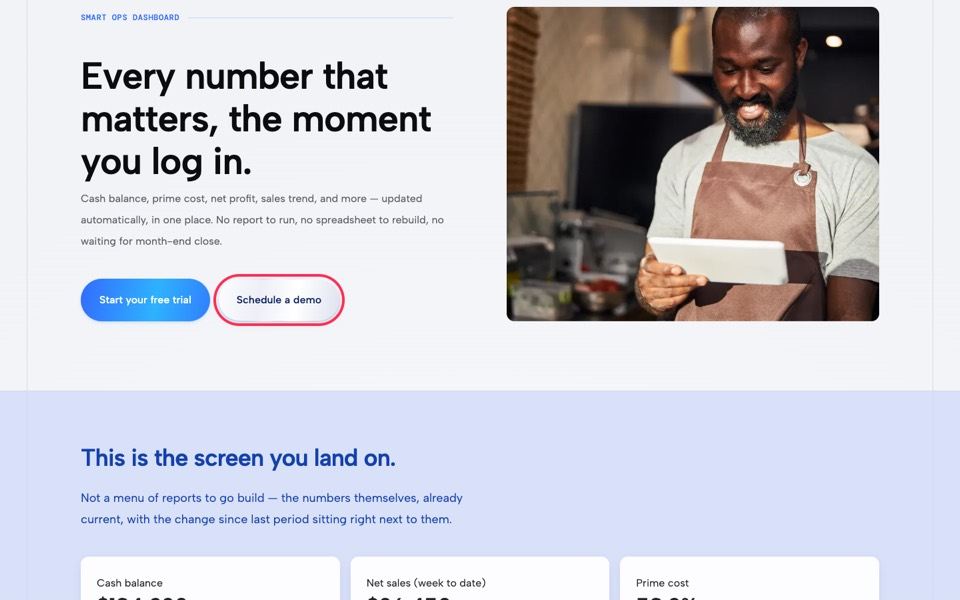
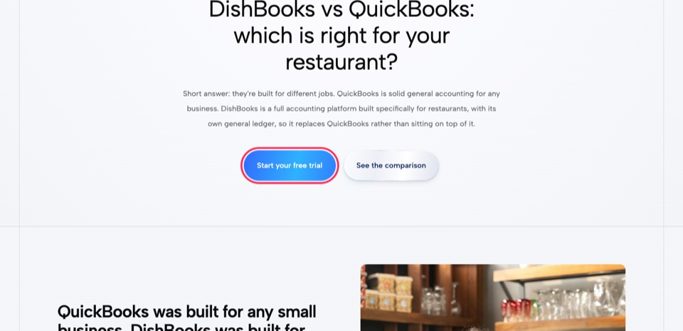
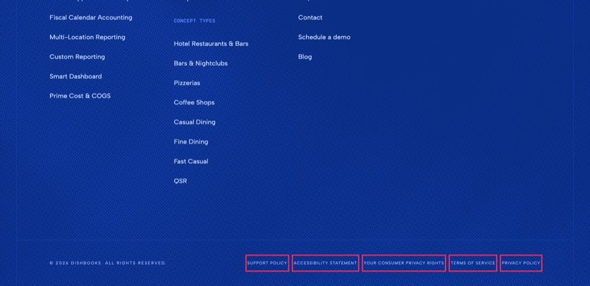
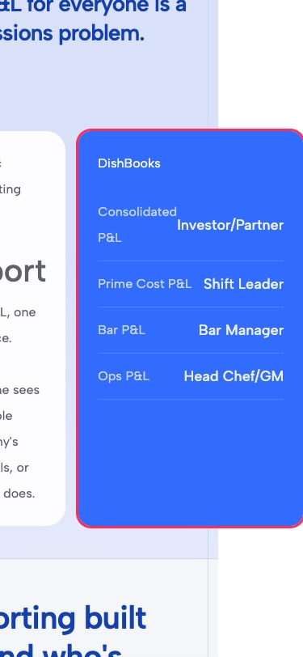
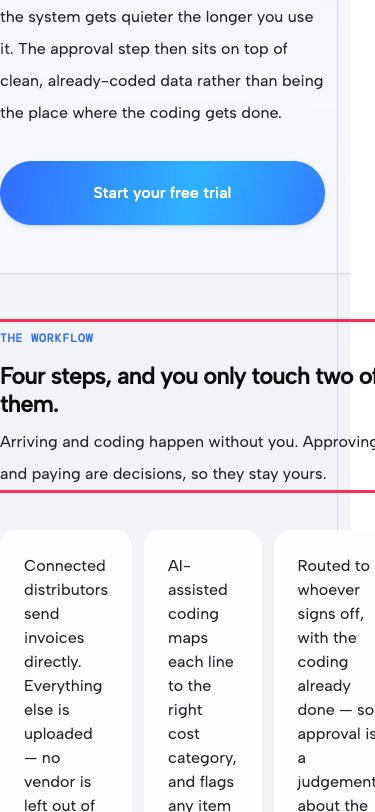

Site audit · dishbooks.com · Webflow site 69d57da1…2876
DishBooks.com Site Audit
A full pass over the live marketing site for speed, SEO, bugs, accessibility and conversion. The biggest problems are broken sign-up and demo buttons, not speed. Every feature page's hero CTAs are dead, and 38 trial buttons use an http:// link. All of these are quick fixes in the Designer.
Audited 9 Oct 2026Live publish 6 Oct 202635 sitemap pages crawled54 Lighthouse runs85 CTA links tracedRead-only: nothing changed in Webflow
The five that matter most
Ranked by impact on sign-ups and search, weighed against effort.
Both hero buttons on all 8 feature pages go nowhere
"Start your free trial" is href="#", and "Schedule a demo" points to /v2-contact, a draft page that returns 404. The Compare pages' trial button is also #.
→ F1, F3
38 trial buttons link to http://app.dishbooks.com/signup, which resets the connection
Chrome hides this by upgrading to HTTPS. Browsers and in-app webviews that don't upgrade show an error. All five footer legal links are also href="#" on every page.
→ F2, F4
Mobile LCP is 10–12 seconds on Home, Feature and Who We Serve pages
Hero images on the Feature and Who We Serve templates are set to lazy-load. On Home, the LCP is a 2.4 MB background video, and three WebGL scenes run on top of it.
→ F5, N1
Every page pays for scripts and fonts it doesn't use
reCAPTCHA (355 KB, render-blocking) loads on all 35 pages, though only /contact has a form. Inter loads in 5 weights and is used on 0 pages. Unicorn Studio WebGL loads everywhere.
→ F8, N2, N3
SEO basics are missing site-wide
No page has a canonical tag or structured data. Both Compare pages are titled just "DishBooks" with no description. All three blog posts preview with a blank title and description when shared.
→ F3, F6, F7, N4
Lighthouse scorecard
Median of 3 runs per page and form factor, Lighthouse 12.8.2. Mobile uses simulated slow 4G with a 4× CPU slowdown.
Performance
Mobile category scores
Mobile metrics (median)
Page
Mobile
Desktop
A11y
Best pr.
SEO
LCP
TBT
CLS
Weight
Requests
Home/
64
83
96
79
100
11.7 s
118 ms
0.00
4.81 MB
46
Why DishBooks/why-dishbooks
83
97
96
79
100
3.4 s
134 ms
0.00
1.19 MB
40
Pricing/pricing
93
99
96
79
100
2.9 s
66 ms
0.01
1.00 MB
36
Feature/feature/smart-dashboard
66
85
96
79
100
11.3 s
90 ms
0.00
1.21 MB
47
Who We Serve/who-we-serve/independent-restaurants
67
85
96
79
100
10.6 s
98 ms
0.00
1.11 MB
38
Blog index/blog
78
96
96
79
100
5.1 s
67 ms
0.00
1.26 MB
39
Blog post/blog/how-to-read-a-restaurant-pl…
83
96
96
79
100
4.2 s
68 ms
0.00
1.37 MB
53
Contact / demo/contact
79
97
97
79
100
4.9 s
60 ms
0.04
1.28 MB
52
Sign-up (app)app.dishbooks.com/signup
79
98
82
96
92
3.8 s
69 ms
0.00
1.22 MB
19
goodneeds workpoorScores: 90+ / 50–89 / under 50. LCP: ≤2.5 s / ≤4 s / over 4 s. TBT: ≤200 / ≤600 ms. CLS: ≤0.1 / ≤0.25.
Home on mobile is the least stable page: its three runs scored 32, 64 and 68. The first (cold) run had 2.4 s of total blocking time, almost all of it Unicorn Studio's WebGL startup. INP can't be measured in a lab run, so TBT stands in for responsiveness here. Desktop Best Practices is 78 on every Webflow page, because HubSpot sets third-party cookies. The "Lighthouse SEO 100" scores only reflect Lighthouse's basic checks; the SEO findings below are what it misses.
Findings
Each finding gives the affected pages, the evidence, why it matters, and the exact fix in the Webflow Designer or Site settings. Remember to publish after each fix.
Show
Fix now
High impact, under an hour each. Most are a link or a setting.
F1
Feature pages: both hero CTAs are dead
Conversion8 pages~10 min
Where
All 8 /feature/* pages (Features Template)
Evidence
<a href="#" class="v2-button w-button">Start your free trial</a>
<a href="/v2-contact" class="v2-button invert-button">Schedule a demo</a> → 404 (v2-Contact is a draft page)

/feature/smart-dashboard: the outlined button leads to a 404. The trial button next to it does nothing.
Why
These are the primary CTAs on the pages built to sell each feature. Every click on them is a lost trial or demo.
Fix
Designer → Pages → Features Template → select the hero Start your free trial button → Link settings → URL https://app.dishbooks.com/signup.
Select Schedule a demo → Link settings → Page → Contact.
Check the mid-page trial buttons in the same template. The crawl found one more # trial link per feature page.
F2
38 sign-up buttons use http://, which the app server refuses
Conversion24 pages~10 min
Where
"Start your free trial" (22 links, e.g. the pricing block on Home, WWS and Compare pages) and the final "Get Started" CTA block (16 links). The nav "Get Started" is correct (https).
Evidence
$ curl -I http://app.dishbooks.com/signup
curl: (56) Recv failure: Connection reset by peer
$ hstspreload.org status for dishbooks.com → "unknown" (not preloaded)
Why
Chrome and Edge quietly retry over HTTPS, so this looks fine in normal testing. Anything that doesn't upgrade automatically shows a connection error on the most important click on the site. That includes older Safari, some LinkedIn and email in-app browsers, and corporate proxies.
Fix
In the Designer, find the components holding these buttons: the pricing teaser and the final CTA section. Change each URL to https://app.dishbooks.com/signup.
Ask the app team to have port 80 on app.dishbooks.com redirect to HTTPS, so any stray http link still works.
F3
Compare pages: dead CTA, title "DishBooks", no description, no share image
<title>DishBooks</title> ← identical on both pages
meta description: none · og:title / og:image: none
<a href="#">Start your free trial</a> (QuickBooks) · <a href="#">Get Started</a> (R365)
CMS field "Primary CTA Link" = "/get-started" → 404 (and not bound to the button)

/compare/quickbooks: the outlined button links to "#".
Why
"DishBooks vs QuickBooks" and "Restaurant365 alternative" are among the highest-intent searches you can rank for. Right now Google sees two pages with the same one-word title and no snippet, and the visitor who arrives can't start a trial.
Fix
Pages → Compares Template → Settings → SEO title: insert the Name field + " for Restaurants | DishBooks". Meta description: bind Subheadline, or add a dedicated "SEO description" field to the collection.
Open Graph: tick "Same as SEO" for title and description, and bind the image to Sub-section image.
Select the hero CTA → Link settings → "Get URL from" Primary CTA Link. In both CMS items, change that field from /get-started to https://app.dishbooks.com/signup.
F4
Footer legal links are all href="#"
Bugs35 pages~5 min
Where
Footer component on every page: Support Policy, Accessibility Statement, Your Consumer Privacy Rights, Terms Of Service, Privacy Policy
Evidence

All five outlined links do nothing. The legal pages have only 1–3 internal links each.
Why
Privacy-law notices expect a working privacy and "your privacy rights" link on every page. Buyers checking a finance product also look for the security and privacy pages before they sign up.
Fix
Open the Footer component → select each credit-legal-link → Link settings → Page → the matching page under /legal. The fix applies to all 35 pages at once.
F5
Hero images are lazy-loaded on the Feature, Who We Serve and Compare templates
Speed21 pages~10 min
Where
img.feature-hero-image (8 feature pages), img.wws-hero-image (11 WWS pages), the Compare hero image (2 pages), and the first row of /blog cards
Evidence
LCP element: <img class="feature-hero-image" loading="lazy" …>
Mobile LCP feature 11.3 s · who-we-serve 10.6 s (Lighthouse "lcp-lazy-loaded" fails)
Render-blocking ahead of it (feature, mobile): lottie_svg.min.js 2.3 s · webflow chunk 2.0 s
· jQuery 1.8 s · webfont.js 1.1 s · recaptcha api.js 0.9 s (Lighthouse estimates)
Why
A lazy image isn't requested until layout finishes and the page's scripts settle, so the biggest thing on screen arrives last. LCP is a Core Web Vitals ranking signal, and over 4 s counts as "poor".
Fix
In each template, select the hero image → Element settings (gear) → Image → Load: Eager. Leave everything below the fold on Lazy. Do the same for the first three cards on /blog. On the Features Template, also add defer to the lottie-web script (N8), which removes the largest blocker on those pages.
F6
No canonical tag on any page
SEO35 pages2 min
Evidence
0 of 35 pages have <link rel="canonical">. Variants such as ?utm_source=…, ?ref=… or /pricing/ all resolve or redirect without a canonical signal.
Why
Ad and email campaigns create parameter URLs that Google can index as duplicates, which splits ranking signals.
Fix
Site settings → SEO → Global canonical tag URL → https://dishbooks.com (apex, no trailing slash, matching the current www → apex redirect). Webflow then emits a self-referencing canonical on every page, CMS pages included.
F7
Blog posts share with a blank title and description
The blog is the content you'll share on LinkedIn. Today each post previews as a bare URL with no headline or image.
Fix
Pages → Blogs Template → Settings → Open Graph. The bindings point at the empty "Open Graph Title / Description / Image" CMS fields. Tick Same as SEO for title and description, and bind the image to the post's main or hero image. Alternatively, fill those three fields in every post.
F8
Inter loads in 5 weights on every page but is used on none
Speed35 pages2 min
Evidence
WebFont.load families: "Albert Sans:300–700", "DM Mono:300,400,500", "Inter:300–700"
document.fonts loaded: Inter 300 400 500 600 700
Computed font-family on rendered text, all 35 pages: Albert Sans, DM Mono only
CSS: --_fonts---inter is defined, never referenced
Why
The WebFont loader forces every listed face to download, roughly 48 KB per weight. That's 5 wasted font files competing with the hero on every first visit. DM Mono 300 is also unused.
Fix
Site settings → Fonts → Google Fonts → remove Inter, and untick DM Mono 300. Also delete the Inter font variable in the Variables panel so nobody picks it up later.
F9
Content errors: typo in an H1, three H1s on /blog, broken links in posts
SEO6 pages~20 min
Evidence
/faq H1 reads "Frequently Asked Qustions".
/blog has 3 H1s, one per post card (and no page-level H1 naming the blog).
/legal/privacy-policy has a second, empty H1 holding only a zero-width character.
The prime-cost post links "Dex AI" to https://dish-books.webflow.io/feature/dex-ai, the staging domain, which returns 404.
The privacy policy links to support.apple.com/kb/PH21411 (404).
Home: the "Control your costs." link is href="#".
Fix
Fix the FAQ heading text.
In the /blog card component, change the title element's tag from H1 to H3, and give the page one H1 (e.g. "Restaurant accounting insights").
Delete the empty heading in the privacy policy rich text.
CMS → Blogs → "How to calculate prime cost…" → relink to /feature/dex-ai. Update the Apple link to Apple's current Safari cookies article.
Point "Control your costs." at /feature/prime-cost-cogs, or remove the link.
F10
The 404 page is Webflow's unstyled default, a dead end
Bugs~20 min
Evidence
No logo, nav, footer or links, in a different typeface from the rest of the site.
Why
Old links will land here (/demo, /signup, /about and /get-started all 404 today). Without a nav, those visitors leave.
Fix
Pages → Utility Pages → 404 → drop in the Nav and Footer components and add links to Home, Features, Pricing and Contact. Consider 301s in Site settings → Publishing → 301 redirects: /demo → /contact and /v2-contact → /contact.
Next
High impact but a few hours each, or design decisions to make first.
N1
Home on mobile: a 2.4 MB background video is the LCP, and three WebGL scenes compete with it
SpeedHome2–4 h
Evidence
LCP element: div.section-card-bg-video > video (db-section-bg-1080p, 2,360 KB MP4, autoplay, no poster)
LCP 11.7 s mobile · render delay 10.2 s · page weight 4.81 MB (vs ~1.2 MB elsewhere)
Video and poster served with cache lifetime 0
Unicorn Studio: 3 scenes on Home · 2.4 s script time on the cold run (score 32)
Why
Home gets the most first-time mobile visits, and 4.8 MB on a phone connection is slow. The section video is decoration, but it's what the browser is waiting on to paint the main content.
Fix
Select the Background Video element → at the Mobile landscape and portrait breakpoints, set it to Display: none and give the parent a background image (the existing db-section-bg-1080p_poster, ~65 KB).
Re-export the desktop video at 720p, under 1 MB.
Unicorn Studio: hide the extra hero scenes below the Tablet breakpoint, or start them only when they scroll into view. See N3.
Coordinate with the homepage-tabs work now in progress: its WebM/MP4 embeds should use preload="none" or metadata, a poster, and play only while visible.
N2
reCAPTCHA loads render-blocking on all 35 pages for one form
Speed35 pages1 h
Evidence
<head> … <script src="https://www.google.com/recaptcha/api.js"></script> (no async/defer)
recaptcha__en.js 355 KB, ~250 KB unused · render-blocking ≈ 0.85 s (Lighthouse estimate)
Forms on site: 1 (wf-form-Contact-DishBooks on /contact)
Why
It's the single largest script on most pages, and it blocks first paint everywhere. It also puts a visible "I'm not a robot" checkbox on the demo-request form, which adds friction at the point of conversion.
Fix
Webflow injects this script site-wide once reCAPTCHA is turned on, so it can't be scoped per page. Choose one:
Site settings → Forms → turn off reCAPTCHA validation and rely on Webflow's built-in spam filtering. Watch submissions for a week.
Or rebuild the contact form as a HubSpot form (HubSpot already loads on every page), which handles its own spam protection and feeds the CRM directly.
N3
Unicorn Studio WebGL runs on every page
Speed35 pages1–2 h
Evidence
[data-us-project] scenes: 1 on most pages · 2 on feature pages and /why-dishbooks · 3 on Home
unicornStudio.umd.js v2.2.10 (51 KB) · main-thread time 0.5 s (WWS) – 2.4 s (Home, cold)
Loaded by an inline embed that injects the script immediately at parse time
Why
On mid-range phones, WebGL startup is the main source of blocking time and battery drain, mostly for a background effect in the shared CTA/footer area.
Fix
In the shared embed, wrap the loader in an IntersectionObserver so the library and scene load only when the section nears the viewport. Hide the scene element at the Mobile breakpoints and show a static gradient image instead. Pin each scene's DPR/quality setting low in Unicorn Studio.
N4
No structured data anywhere
SEO35 pages2–3 h
Evidence
0 application/ld+json blocks on 35 pages. /faq has 111 CMS FAQs and no FAQPage markup.
Why
Schema is how Google and AI answer engines identify DishBooks as a software product with a price, an organisation, and authored articles. It qualifies the site for richer results and gives AI summaries something reliable to quote.
#326CFF on #FFFFFF 4.4 : 1 (AA needs 4.5 : 1 for body-size text)
#326CFF on #F4F6FB 4.1 : 1 eyebrows, .text-blue, active nav link, contact labels
#929498 select text 3.0 : 1 "Select one…" on /contact
Why
WCAG 2.1 AA §1.4.3. Your own Accessibility Statement commits to AA, and low-contrast labels are harder for everyone to read on a phone in a bright restaurant.
Fix
For text only, use #2D63EF (5.1 : 1 on white, 4.7 : 1 on the light grey). Change it on the text-blue / text-eyebrow classes, or add a "text-brand" colour variable. Keep #326CFF for buttons and large headings, which only need 3 : 1. Set the select's placeholder colour to #6B6E74 (5.1 : 1).
N6
No <main> landmark, and invisible focus on dropdowns and tabs
Accessibility35 pages1 h
Evidence
axe: landmark-one-main (35/35 pages) · region: 371 nodes outside landmarks · no <footer>
Keyboard focus outline: none on "Features" and "Who We Serve" toggles and on the home tab links (.tab-item)
Why
Screen-reader users jump by landmarks, and keyboard users can't see where they are when they reach the menu or the tabs.
Fix
Wrap each page's content between nav and footer in a Div → Element settings → Tag: Main. Set the footer section's Tag to Footer.
Add a Focus (keyboard) state to nav-v2-link menu and tab-item: outline 2px solid #2D63EF, offset 2px.
N7
Horizontal scroll and clipped content on phones and tablets
Layout3 pages1–2 h
Evidence
/feature/custom-reporting @375 +105 px .f-compare-card-right pushed off-screen
/feature/invoice-bill-pay @375 +51 px "The workflow" grid keeps 3+ columns; gutter lost
/contact @768 +117 px form card clipped at the right edge (+2 px at 375)
All other pages: no overflow at 375 / 768 / 1024 / 1440 / 1920

custom-reporting @375

invoice-bill-pay @375contact @768
Fix
At the Mobile portrait breakpoint, set the compare-card row and the workflow grid to one column (or flex-wrap). At Tablet, stack the contact page's image card above the form, or give the form min-width: 0.
N8
Features Template custom code: duplicates, a placeholder, and dead scripts
Code hygiene8 pages30 min
Evidence
The .outcomes-rt style block appears twice. The first copy has url("PASTE_CHECK_BADGE_ASSET_URL").
Two separate [data-dex-chat] Lottie initialisers, but no page has a [data-dex-chat] element. If one is added, it will mount two players.
A second copy of the .v2-button gradient CSS, with different timings (3.2 s here vs 5.5 s site-wide), so buttons animate differently on feature pages.
The [data-animate] rule and the is-loaded script target zero elements.
lottie-web is loaded without defer.
Fix
Pages → Features Template → Settings → Custom code. Keep one .outcomes-rt block (the data-URI one) and the [data-lottie] initialiser. Delete the rest, and add defer to the lottie-web script tag. Keep the site-wide button CSS as the only source.
Titles over 60 characters: fiscal-calendar 66, accounting-firms 63, dex-ai 61.
Too short and generic: "DishBooks Blog" (14), "DishBooks Pricing" (17).
Fix
Edit the SEO fields in the Features and Who We Serve CMS items. For static pages, Pages → Settings, for example "Restaurant Accounting Software Pricing | DishBooks" and "Restaurant Accounting Blog: Prime Cost, P&L & AI | DishBooks".
N10
The demo path ends in a generic contact form
Conversion/contact2–4 h
Evidence
37 "Schedule a demo" links go to /contact. That form requires only an email, has a default "Inquiry Type" with no demo preset, shows a reCAPTCHA checkbox, and offers no way to pick a time. The page has 138 words and no proof points next to the form.
Why
Someone who clicked "Schedule a demo" expects a calendar. A message form and a reply email cost a day and lose some leads.
Fix
Make the demo links go to /contact?type=demo (or a dedicated /demo page). Embed a HubSpot Meetings scheduler, which you already run HubSpot for. Pre-select "Demo" as the inquiry type, require name and business, and add one testimonial or the "set up in days" claim beside the form.
Later
Worth doing; smaller payoff or outside Webflow's easy controls.
L1
Self-host the two fonts to drop the render-blocking WebFont loader
Speedhalf day
Evidence
webfont.js loads synchronously in <head> on every page (≈1 s render-blocking on mobile, per Lighthouse) and loads font files late, after its own JS runs.
Fix
Download Albert Sans (400–700) and DM Mono (400, 500) as WOFF2. Upload them in Site settings → Fonts → Custom fonts with font-display: swap, re-point the two font variables, then remove the Google Fonts entries. Webflow's own scripts (jQuery, webflow.js, GSAP) stay render-blocking whatever you do. That's platform behaviour.
L2
Image and asset hygiene
Assets2–3 h
Evidence
55 of the 56 most recent images in the Asset panel have no alt text. Generic names: raw_image_16.webp, Frame 634463.svg.
110 content-sized images render with alt="" (marked decorative), including blog card images and heroes.
Blog body images are 2560 px wide and display at ~709 px.
Two 5–6 MB WebM uploads (hero-1080p_1.webm, db-section-bg-1080p.webm).
Fix
Asset panel → each image → Settings → Alt text, with descriptive file names. In the Designer, set alt to "Use alt text from asset" for content images. Export blog inline images at 1600 px. Delete assets that aren't used once you've checked they're unused (the Asset panel shows usage).
L3
Internal linking: Compare pages and blog posts are near-orphans
SEO1 h
Evidence
Inbound internal links: /compare/quickbooks 1 · /compare/restaurant365 1 · each blog post 2 · legal pages 1–3
Features, Who We Serve, core pages: 35 each (nav + footer)
Fix
Add a "Compare" column to the footer (vs QuickBooks, vs Restaurant365) and link both from /pricing and /why-dishbooks. Link each blog post from the feature page it supports, e.g. prime-cost post ↔ /feature/prime-cost-cogs.
L4
Third-party tags: review what each one earns
Tags1 h
Evidence
GTM-T3K23CKL via Webflow's Google tag (first-party gateway) → GA4 G-FCHV8M3JE5 ✓ good setup
HubSpot 245560509: tracking + cookie banner + collectedforms.js ≈ 100 KB, 250–850 ms main thread
cdn.loopanalytics.com/trackatron4.js (via GTM) · disable-hubspot-chatbot.js on every page
Lighthouse Best Practices: third-party cookies (HubSpot) on every page
Fix
In GTM, confirm loopanalytics is still in use. In HubSpot, turn off "collected forms" if the Webflow form isn't meant to feed HubSpot, and turn off the chatbot in HubSpot itself rather than loading a script to suppress it.
L5
Small indexing and platform settings
SEO30 min
Evidence
robots.txt contains only the Sitemap line, with no User-agent group.
twitter:image is missing on 15 pages (X falls back to og:image), and og:url is never emitted.
The HSTS header says preload, but the domain isn't on the preload list.
No X-Content-Type-Options, Referrer-Policy or Permissions-Policy headers. Custom headers need Webflow Enterprise.
Fix
Site settings → SEO → robots.txt: User-agent: * / Allow: / / Sitemap: https://dishbooks.com/sitemap.xml. Submit at hstspreload.org once you're sure every subdomain serves HTTPS, including app.dishbooks.com on port 80.
L6
Sign-up app (outside Webflow): accessibility 82 on mobile
App team
Evidence
app.dishbooks.com/signup: #mobile-nav-toggle button has no accessible name, the logo link has no name, a button fails contrast, and there's no meta description. The CSP blocks one resource (Lighthouse inspector issue).
Fix
Pass to the app team: add aria-label="Open menu" and aria-label="DishBooks home", a meta description, and check the CSP console error.
L7
CMS data that will bite later
CMS20 min
Evidence
A placeholder author, "Jane Doe, Senior Researcher" (stock photo), is published in Blog Authors.
A Who We Serve Section links to /features/custom-reporting (plural, a 404). It isn't rendered today.
Compare items' Primary CTA Link is /get-started (a 404). See F3.
Mobile menu: the page behind it still scrolls, and the Features / Who We Serve toggles sit 2 px off the other links.
Fix
Archive Jane Doe. Fix the link fields to /feature/… and the signup URL. Optionally, add overflow: hidden on body while the menu is open, through an interaction.
Checked and fine
No action needed.
HTTPS everywhere, HSTS on, no mixed content
www and http redirect to https://dishbooks.com (301)
Sitemap lists all 35 published pages; no drafts leak
Draft and helper-collection URLs (v2-contact, old-home, FAQ items…) return 404, not thin pages
No noindex anywhere; robots.txt doesn't block
Unique titles on 33/35 pages; meta descriptions on 33/35
Exactly one H1 on 33/35 pages; no skipped heading levels found
No JavaScript errors or console errors on any page
No failed requests apart from routine analytics beacons
CLS under 0.04 on every tested page
Images served as WebP/SVG with responsive srcset
Every <img> has an alt attribute; lang="en" set
Mobile menu, dropdowns (click and keyboard), home tabs and FAQ accordion all work
Contact form validates client-side (email required); not submitted during the audit
GA4 runs through Webflow's first-party Google tag gateway
Reduced-motion handled in the button and Lottie scripts
How this was measured
Lighthouse 12.8.2, headless Chrome on macOS: 9 pages × mobile and desktop × 3 runs, run one at a time; the median is reported. These are lab numbers from one machine and connection. Real-user (CrUX) data wasn't checked, and the site may be too new to have it.
Crawl: all 35 sitemap URLs plus a test 404, in Playwright and Chrome. It recorded titles, meta, canonical, OG and Twitter tags, headings, JSON-LD, images, links, console and network errors, and axe-core 4.10 (WCAG 2.1 A/AA and best practice), and checked overflow at 375, 768, 1024, 1440 and 1920 px.
Links: 47 unique link targets requested with redirects followed, plus anchor checks. 429 responses from aboutads.info are rate limits, not broken links.
Webflow (read-only): site settings, the 25-page list with SEO/OG fields, site and page custom code, 11 CMS collections, and the asset library (150 assets). Nothing was edited or published.
Raw data is in the audit worktree under site-audit/: lighthouse/ (54 JSON reports plus summary.json), raw/crawl.json, raw/links.json, raw/interact.json, screenshots/ (38 PNGs).